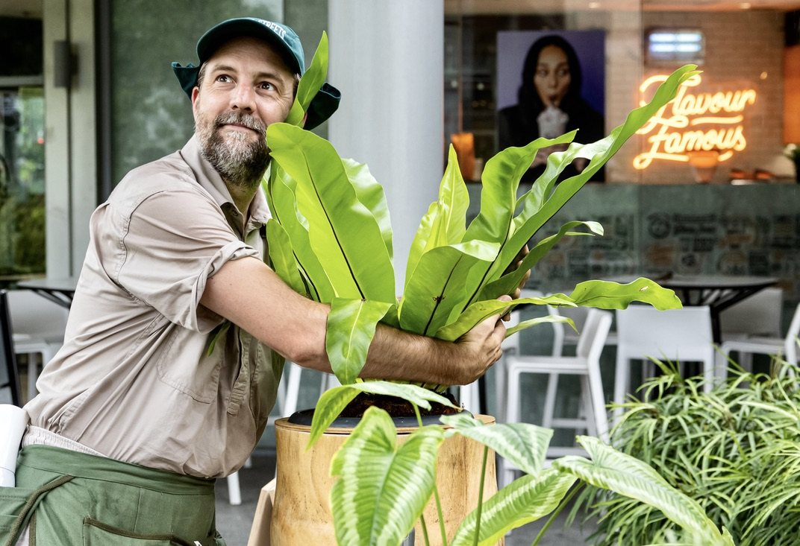
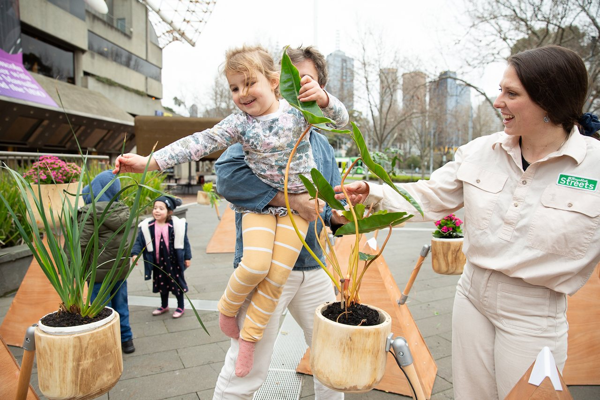
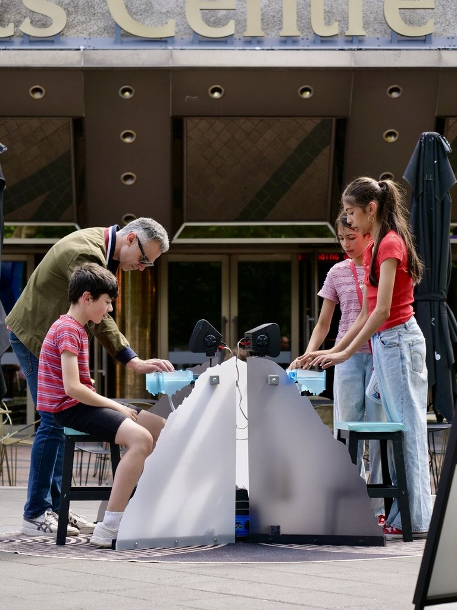
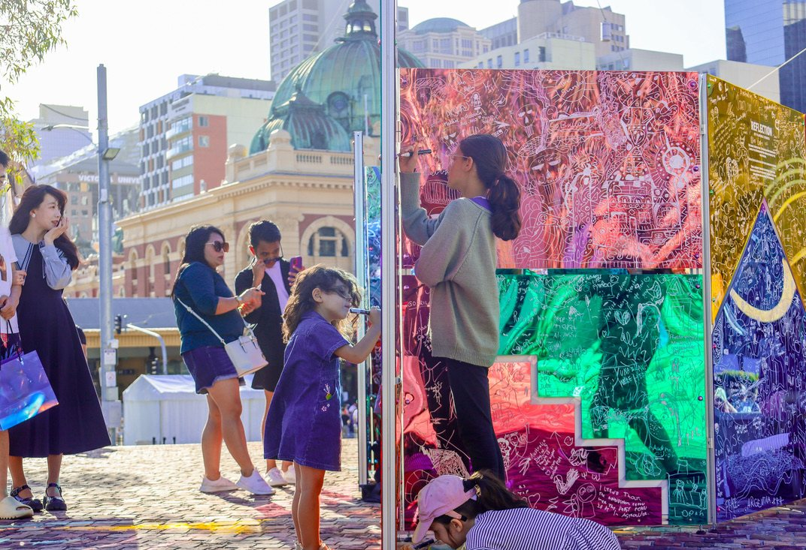
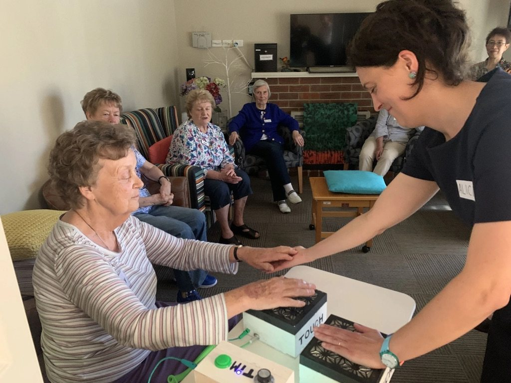
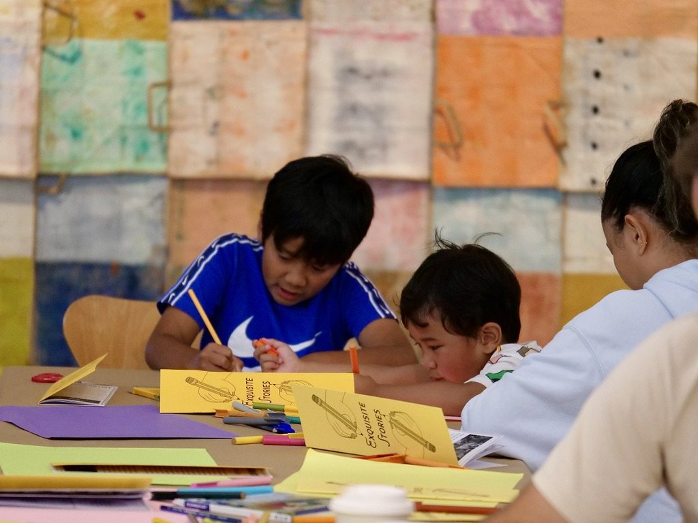
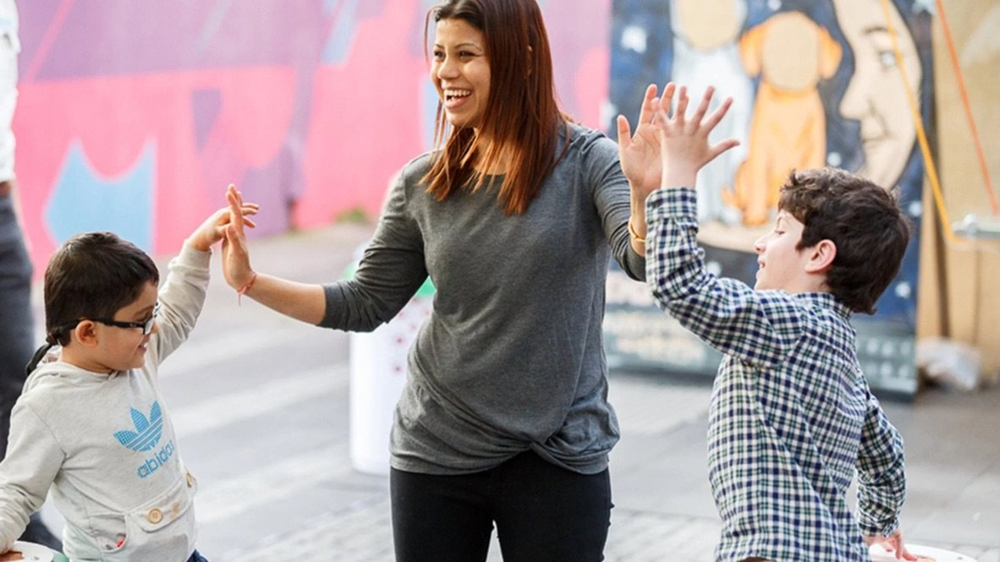
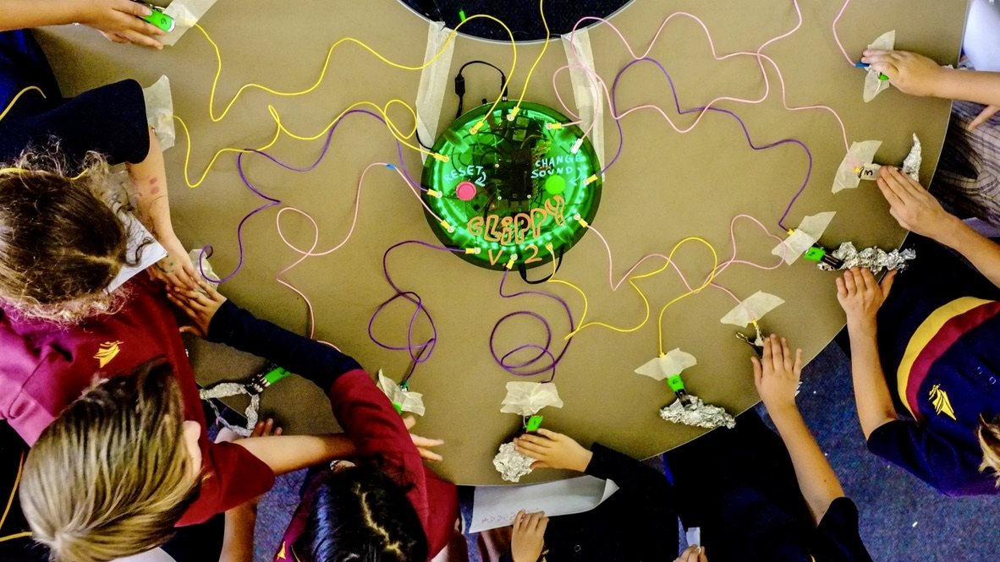

I make participatory artworks that invite strangers to play, make music and create together in public space.
I founded Playable Streets in 2015 and have grown it into an international company touring a repertoire of works to festivals, councils and cultural venues. I'm a cofounder of The Suitcase Royale, a long time collaborator with Polyglot Theatre, and recently completed a practice based PhD on the role of the creative facilitator.

Work
Each work opens its full page on Playable Streets.

The Musical Plants
Living plants become instruments that play when you touch them. Toured to Singapore, Seoul, Busan and festivals across Australia since 2016.

ColdVoice
An instrument made of ice that plays field recordings from Alaskan glaciers.

Reflection
Coloured mirrors people draw and write on, glowing under ultraviolet light at night.

Duet Arts
Music making through touch with aged care residents, many living with dementia.

Exquisite Stories
Children's drawings become an installation of new characters with real recorded voices.

Reach Out Sounds
Reach out and connect with each other to make music.

CLIPPY
A kit that makes anything playable, used in school workshops.
Showreel
Videos of the work on the Playable Streets YouTube channel.
Now and next
- Plant Sonata, a long term commission at Changi Airport, Singapore Since 2025
- Children's Biennale, National Gallery Singapore 2027 to 2028
- Creative Facilitator Summit, ArtPlay and Arts Centre Melbourne 2027
- ColdVoice Monoliths and Kite Choir In development
Work with me
Participatory artworks
Commissioned and touring works for streets, festivals, precincts and cultural venues.
Community engagement through play
Engagement processes that invite people in through making and playing together.
Facilitation training
Workshops for artists, educators and council teams, drawn from my doctoral research.
Research partnerships
Collaborations with universities and organisations on participation, play and public space.
Research
The Creative Facilitator: Practices within Outdoor Participatory Performance
Publications
Walton, G. (2026). The creative facilitator: Practices within outdoor participatory performance [Doctoral thesis, Deakin University].
Walton, G., Greuter, S., & Dennis, R. (2022). Exploring participant interaction with interpersonal touch musical interfaces. In Designing Interactive Systems Conference (pp. 28–31).
O'Neil, M., Austin, H., Borthwick, C., Macindoe, A., Saulwick, T., & Walton, G. (2022). Sonic touch: Charting connections in contemporary sound-led performance practice. Performance Research, 27(2), 64–71.
Walton, G. (2018). Designing interactive touch-based musical installations [Master's thesis, University of Technology Sydney].
Talks
The bridge to bring people in, ASSITEJ Singapore
Strangers as collaborators, Pervasive Media Studio, Bristol
Interactive technologies for musical collaboration, Technische Universität Berlin and SensiLab, Monash University
Sound, Touch and Technology: New Pathways to Well-Being in Aged Care, ACRL, Melbourne
Teaching and mentoring
Lecturer, Creative Technologies in Theatre, Deakin University, 2021 and 2022
Mentor, Creative Workers in Schools, Regional Arts Victoria, 2021
Interns hosted from RMIT, Deakin, VCA and Design Academy Eindhoven
Residencies, delegations and awards
Children's Theatre Alliance delegate, Hong Kong, 2026
Pervasive Media Studio, Bristol, and Australian delegate, Ars Electronica, Linz, 2018
Green Room Award for Innovation in Contemporary Performance for Young People, 2016, for Separation Street
Things I like
Artists, projects and ideas that shape how I work.
GRAV
Participatory art in Paris in the 1960s
The Trees by Percival Everett
Bloomshed
Naarm based theatre company adapting classics in a perfectly twisted way
The Grand Magoozi
Ten years was worth the wait for this new album
A History of Rock Music in 500 Songs
An epically ambitious podcast!
Little Rebel Coffee
Best batch brew coffee in Dromana